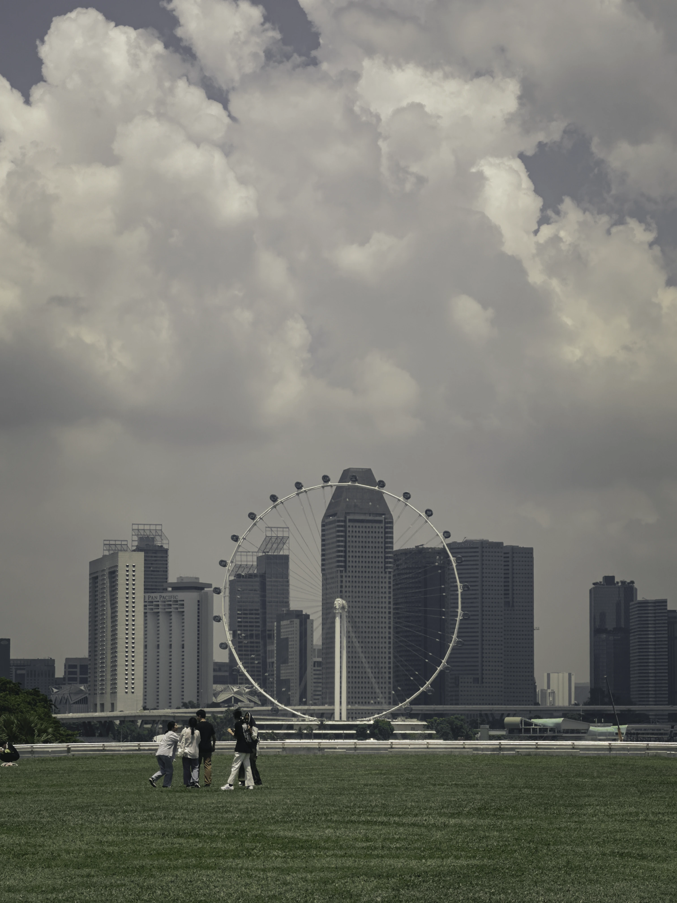

A Journey Through Photography
Capturing moments that speak louder than words.
Technology and Creativity
Combining technology with creativity allows for endless possibilities in visual storytelling. Every photo I take is a testament to the beauty of innovation.


The Art of Storytelling
Photography is not just about capturing images; it’s about telling stories. Through my lens, I convey emotions, experiences, and moments that connect deeply with viewers.